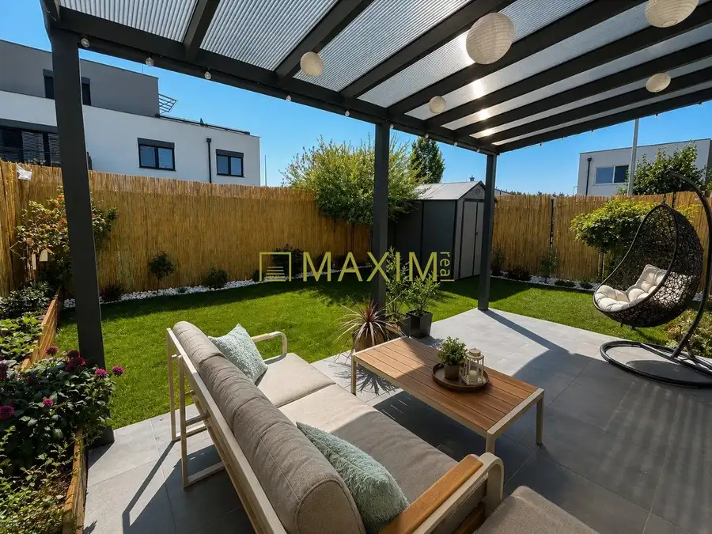
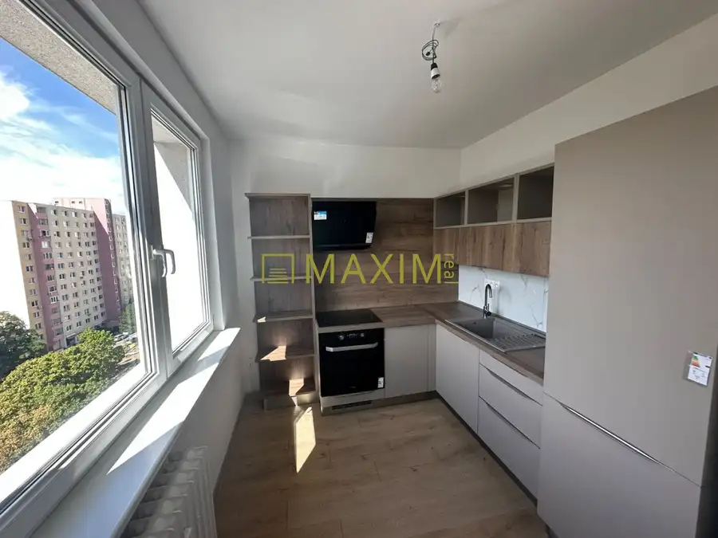
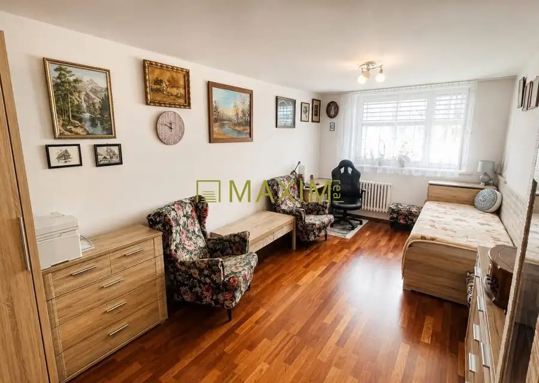
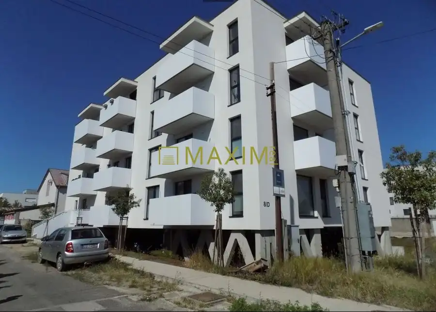
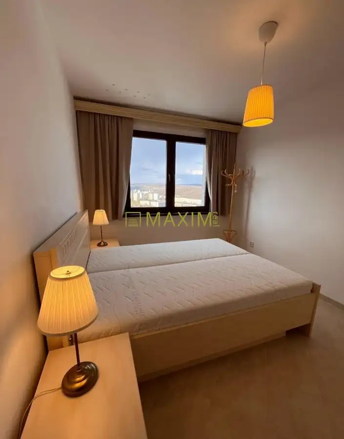
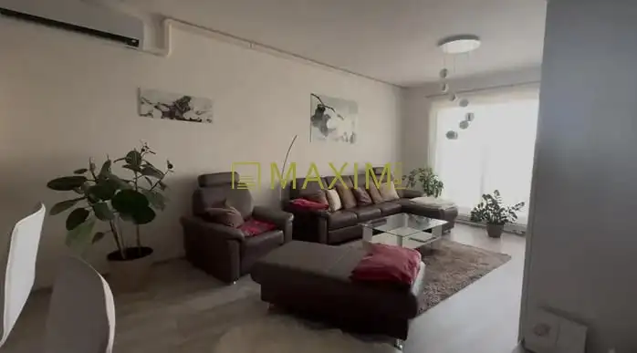

Aktuálna ponuka
6 nehnuteľností, predovšetkým byty. Každá má vlastnú stránku s fotkami, popisom a mapou.
Prezrieť ponuku
 Tu bude Vaša fotkapošlite ju e-mailom, obratom ju vymeníme
Tu bude Vaša fotkapošlite ju e-mailom, obratom ju vymenímeAnita Kurka · Realitný maklér · Maxim Real
Volám sa Anita Kurka, som realitný maklér kancelárie Maxim Real. Predaj, prenájom a odhad ceny nehnuteľností, lokality Bratislava, Kostolište a Stupava.
Viac o mneVolám sa Anita Kurka. Som realitný maklér kancelárie Maxim Real a pôsobím predovšetkým v lokalitách Bratislava, Kostolište a Stupava (Bratislavský kraj).

6 nehnuteľností, predovšetkým byty. Každá má vlastnú stránku s fotkami, popisom a mapou.
Prezrieť ponuku
Bratislava, Kostolište, Stupava a okolie. Ponuku si môžete prezrieť podľa lokality.
Nehnuteľnosti v lokalite
Odhad trhovej ceny, príprava prezentácie, obhliadky, zmluvy a odovzdanie nehnuteľnosti.
Dohodnúť stretnutie
BytNové 255 000 €3- izbový byt na ulici Dlhé Diely Karlova Ves, Bratislava 3-izbový66 m²12. podlažie
Byt 440 000 €3-izbový byt na ulici Kresánková Karlova Ves, Bratislava 3-izbový128.55 m²1. podlažieTomuto výberu zatiaľ nezodpovedá žiadna ponuka. Napíšte mi, čo hľadáte.
Každý špendlík je jedna nehnuteľnosť z mojej ponuky. Kliknite a pozrite sa.
© prispievatelia OpenStreetMap
Na čo sa pýtate najčastejšie, skôr než sa stretneme.
Odhad trhovej ceny vychádza z aktuálnych ponúk a predajov v lokalite, nie z cenníkových tabuliek. Podmienky Vám poviem pri prvom telefonáte.
Najprv obhliadka a odhad ceny, potom príprava prezentácie (fotografie, popis, inzercia), obhliadky so záujemcami, rezervačná zmluva, kúpna zmluva, návrh na vklad do katastra a odovzdanie nehnuteľnosti. O každom kroku viete vopred.
Najrýchlejšie cez WhatsApp alebo telefón. Termín stretnutia alebo obhliadky dohodneme podľa Vás.